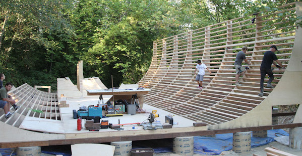
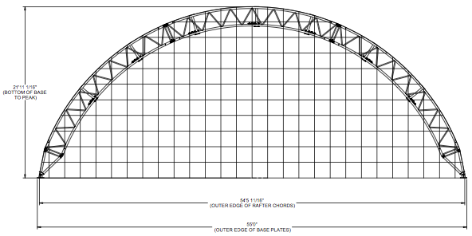
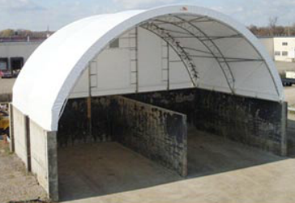

Seattle Vert Ramp
The Seatle Vert Ramp will be a private modern indoor contest-spec skateboard
ramp that will be 13.5' tall and 56' wide, with 14' of flat and
a birch surface. It will
be a training facility for the next crop of up-and-coming Seattle-area
professional vert skateboarders, as well as many older skaters who
love to ride big transitions.


Fork me on github.